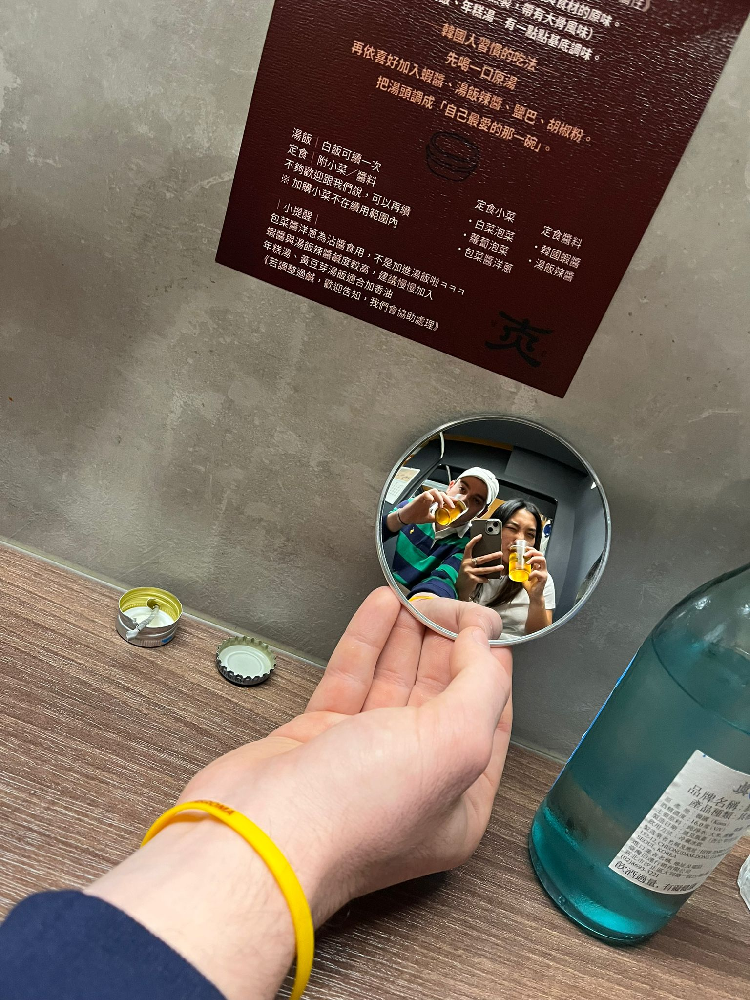
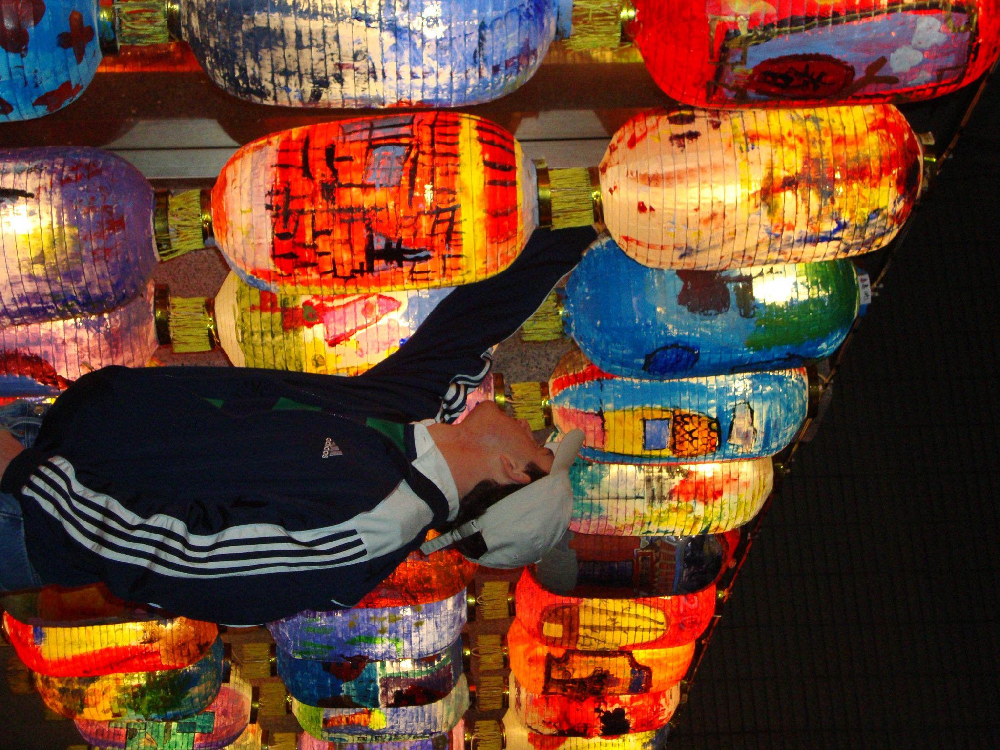
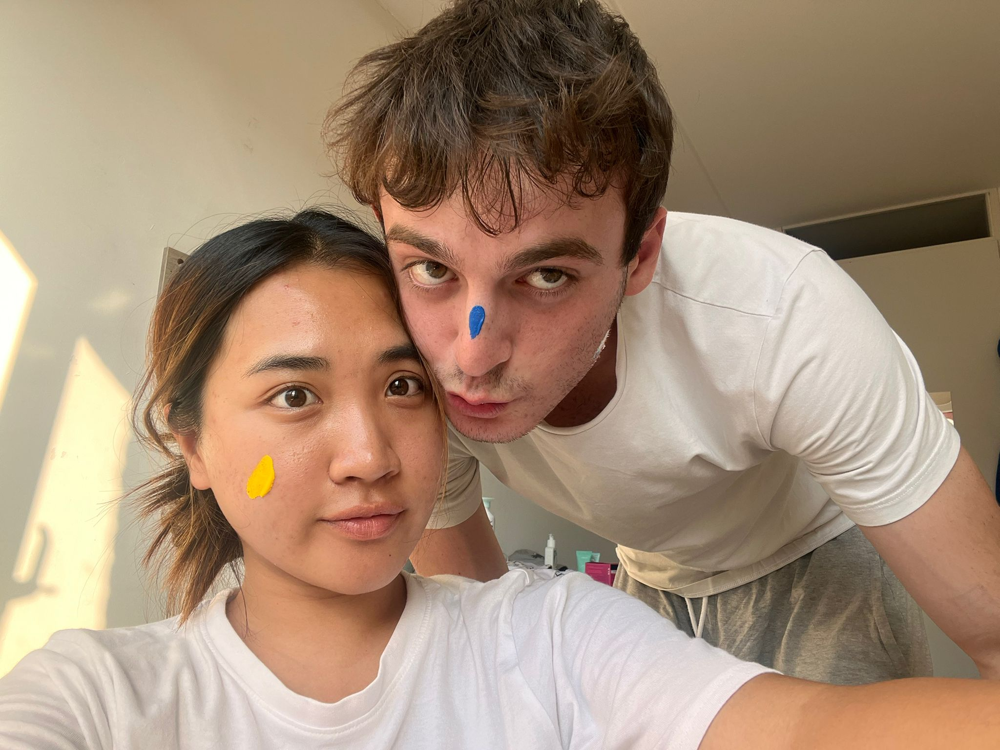

Hi, I'mLorenzo Pardini
BSc Business Administration @UniPi | Building stuff to fail better.
I hate friction and bureaucracy. That's why I build systems: smooth workflows and durable knowledge.
When I work, I think about one thing: how is this going to help me in the future? When I have an answer, I move. I make mistakes, I adjust, and I optimize until something useful comes out.
Check my projects to see what I've been working on during my university years.
Let's stay in touch: LinkedIn

Projects
Loading projects…
Next steps

Infrastructure
Academic Background & Experience
From the Versilia beaches to a Dutch classroom to the first build, an ongoing journey.
-
Nov 2026
Laurea breve in Economia Aziendale
Università di Pisa
Graduation date: 3 November 2026.
Coursework: Macroeconomics, Statistics, Marketing, Corporate Finance.

-
Jun to Aug 2026
Commis di Sala
Villa Roma Imperiale · Forte dei Marmi
Front-of-house service for international guests under pressure.
-
Apr 2026 to present
Marketing Associate
Starting Finance Club UniPi
Educational content about economics and finance, written for students.


Weekly explainers on NVIDIA's history, written for students.
-
Feb to Jul 2025
Erasmus+ · International Finance and Control
Fontys Venlo University of Applied Sciences
Coursework: Data Analytics, Advanced Statistics, Controlling and Cost Accounting.

me and my roommates, sorry I could not find a more serious photo :)
-
Apr to Nov 2024
Commis di Sala
Principino · Viareggio
Large-scale events up to 500 guests; promoted mid-contract.
-
2022 to 2023
Commis di Sala
Bagno Orizzonte · Lido di Camaiore
Beach hospitality across two seasons, funding my studies.
Certifications
- IELTS Academic, C1 (overall 8.0), British Council, test Oct 2026
- AI Elements: Introduction to AI, University of Helsinki, Oct 2026
- Google Data Analytics Professional Certificate, Google, Mar 2026
Personal Drivers: What shapes my approach?
Three things shaped how I work. None of them are jobs.
Shaping a Performance Mindset
Spent 15 years staring at the black line on the bottom of a pool.
Raw discipline and consistency: no shortcuts, you show up or the clock proves you didn't.
Ability to execute under physical and mental fatigue.
Long-term commitment: complex results are just the accumulation of small, daily repetitions.


Developing Strategic Patience
Playing chess for about a decade.
Pattern recognition and catching small details before they become a problem.
Patience over impulse: slowing down and thinking ahead when things get complicated.

Expanding a Global Perspective
Moving out for my Erasmus in the Netherlands, plus traveling through places like Taiwan and Thailand.
Adapting quickly to new environments and feeling comfortable outside my comfort zone.
Realizing there is rarely just one way to approach a problem.
